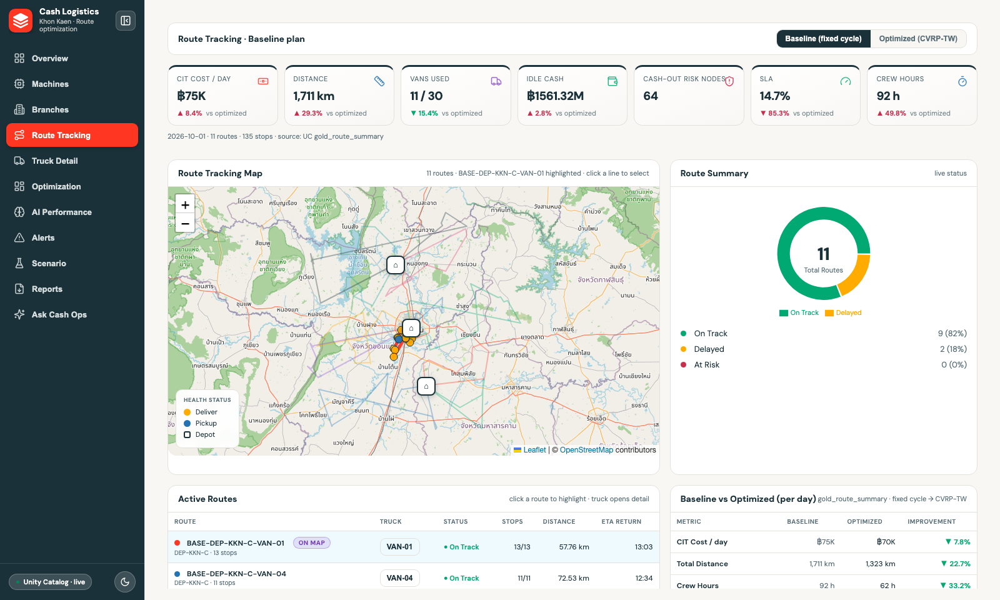
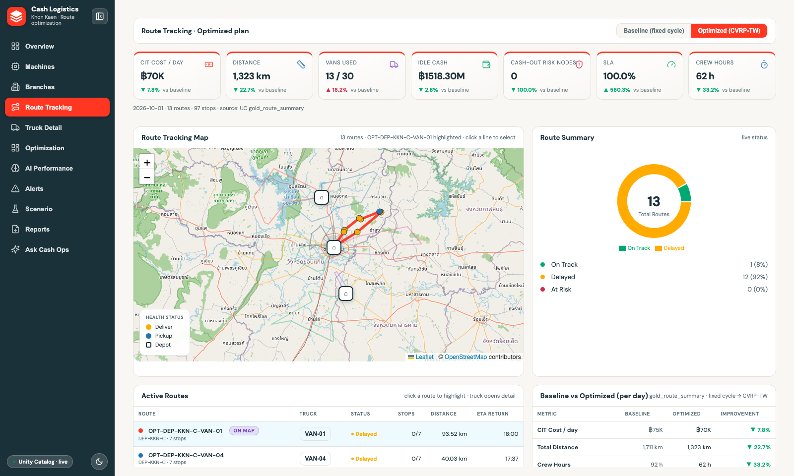
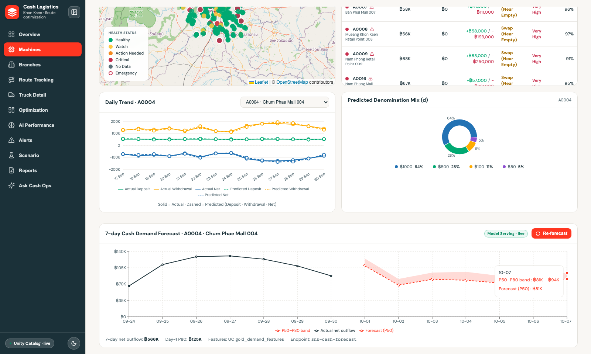
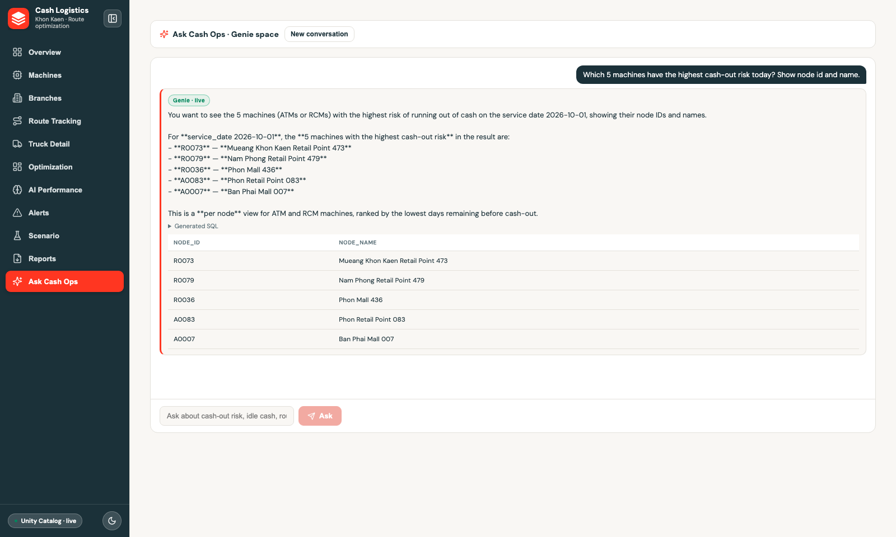
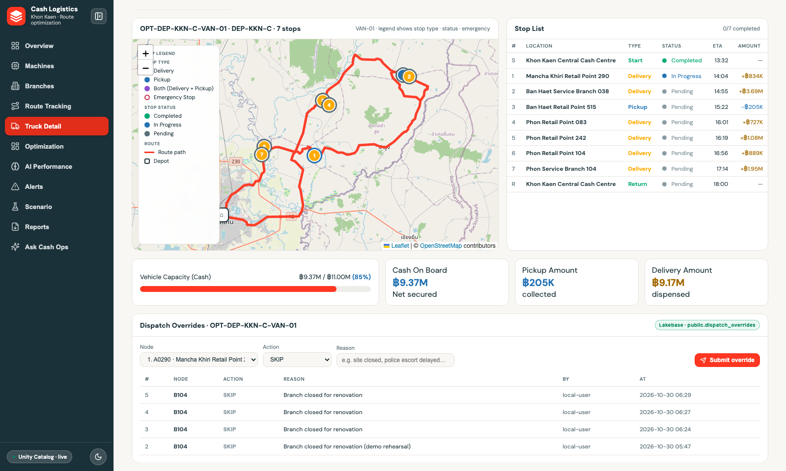

Forecast-driven cash logistics for the Khon Kaen region · MVP on Databricks
sitting in machines and vaults on the plan day
of stops inside branch opening hours
machines at risk of running dry in one day
and 1,711 km for demand that needs only 97 stops
Opportunity cost (illustrative): at an assumed 2% cost of funds, every THB 43M of float freed ≈ THB 0.9M a year.
PromptPay and QR payments keep growing, so a fixed cycle overstocks machines more every year.
New Year and Songkran payday peaks are exactly when a calendar rule fails and machines run dry.
CIT and fuel costs are rising, and the vendor contract and budget cycle create a natural decision point.
≈ THB 125K a month in CIT cost alone, before idle cash and cash-outs.
ATM switch, vault system, CIT trip logs, core banking and holiday spreadsheets live apart.
Drivers and dispatchers know which sites are closed or busy; it travels by radio.
A calendar rule decides the visit, not expected withdrawals.
Routes are built in Excel from yesterday's numbers.
Overrides happen by phone; nobody can see why a stop changed.
Custodian PII and depot access are controlled differently in every system.
Each step reads the previous step's governed output: one copy of the data, one security model, from raw feed to the dispatcher's screen.


CIT cost/day ฿75K → ฿70K
Distance 1,711 → 1,323 km
Cash-out risk 64 → 0
SLA 14.7% → 100%



Every override carries an action, a reason, an author and a timestamp.
| Risk | How we handle it |
|---|---|
| Firewall / on-prem ATM switch | Start with secure file drops into a Unity Catalog volume, then move to private connectivity. A Databricks networking specialist joins. |
| Timeline slips | Protect the outcome and cut scope: one depot, file feeds first. |
| PDPA / security sign-off | Data stays in your workspace and region, PII is masked, every change has an audit trail. Our security team joins your review. |
| Commercials | Owned by the account team; no commitments today. |
Repo: https://github.com/nan-databricks/fe-bar-cash-route
| Decision | Why | Trade-off |
|---|---|---|
| Declarative pipeline, not notebooks | Expectations, lineage, incremental by default | Less ad-hoc flexibility |
| One global LightGBM, not 679 models | Shares signal, handles new ATMs, one endpoint | Less per-node tuning |
| P80 quantile for replenishment | A cash-out costs more than a little extra cash | Some extra float carried |
| OR-Tools, 25 s per depot | Open source, explainable, fast | Not provably optimal |
| Lakebase synced tables for the App | Fast reads plus writable overrides | Snapshot freshness, not streaming |
| Genie agent mode, not a custom agent | Governed by Unity Catalog, no prompt plumbing, fast to value | Less custom tool control |
| Serverless everywhere | No cluster ops, scale to zero for a once-a-day plan | Cold starts |
cash_demand_forecast@champion in UC, on a serving endpoint